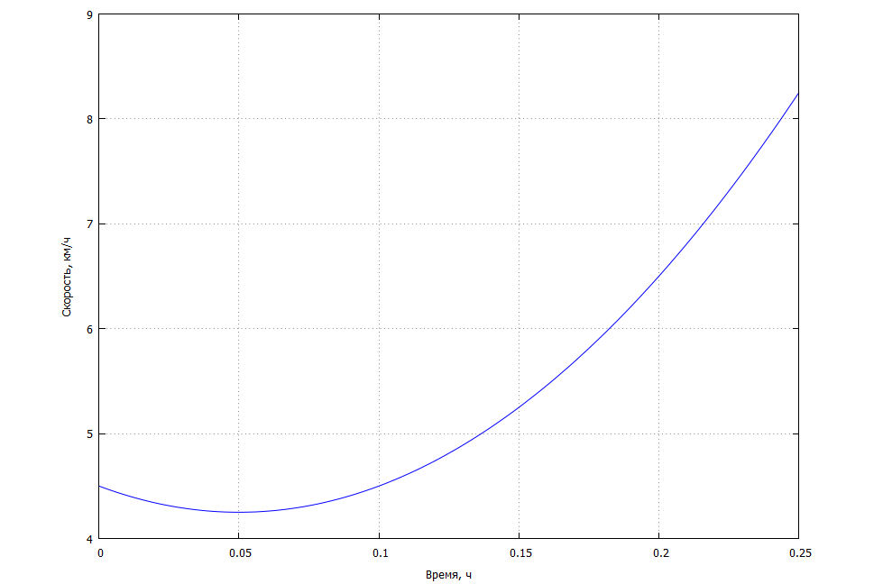
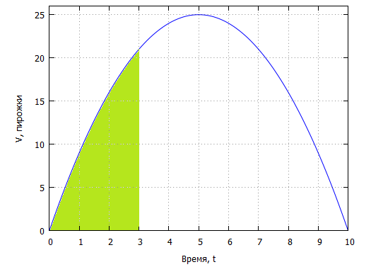

Вам необходимо решить представленный кроссворд. Выделенный столбец - это ключ шифра. Вы помогаете Шерлоку Холмсу.
«Сколько же еще ехать до Баскервиль-Холла?» - думал Ватсон и решил посчитать это через интеграл. Благо, у него была с собой записная книжка и карандаш.
Дан график зависимости скорости коляски от времени:
Посчитайте, какое расстояние (в километрах) еще нужно проехать доктору Ватсону и сэру Генри, используя формулу, которую вы найдете на сайте или в учебнике, пользуясь примером 5 на странице 287.
Пусть эпидемическая кривая выражается уравнением: , где f(t) - количество случаев заболевания
(процент населения), t - время, выраженное в неделях. Определите, какой процент населения переболел в период
времени «Комплексная оценка». Для подсчета воспользуйтесь
калькулятором, единицы измерения
укажите «радианы». При расчетах используйте 5 знаков после запятой, результат округлите до десятых.
Ссылка на проект «Глобальный эпидемиологический надзор во время пандемии гриппа».
На странице 8 вы найдете описания компонентов эпиднадзора.
Методическое пособие. Свойства и таблица основных интегралов на странице 3.
Вы знаете, что производительность миссис Хадсон можно выразить формулой: . Сколько пирожков испечет миссис Хадсон?
Формулу для расчета вы найдете здесь.Определите, на каком изображении находится график данной функции и правильно выделенная область интегрирования:
Д) 